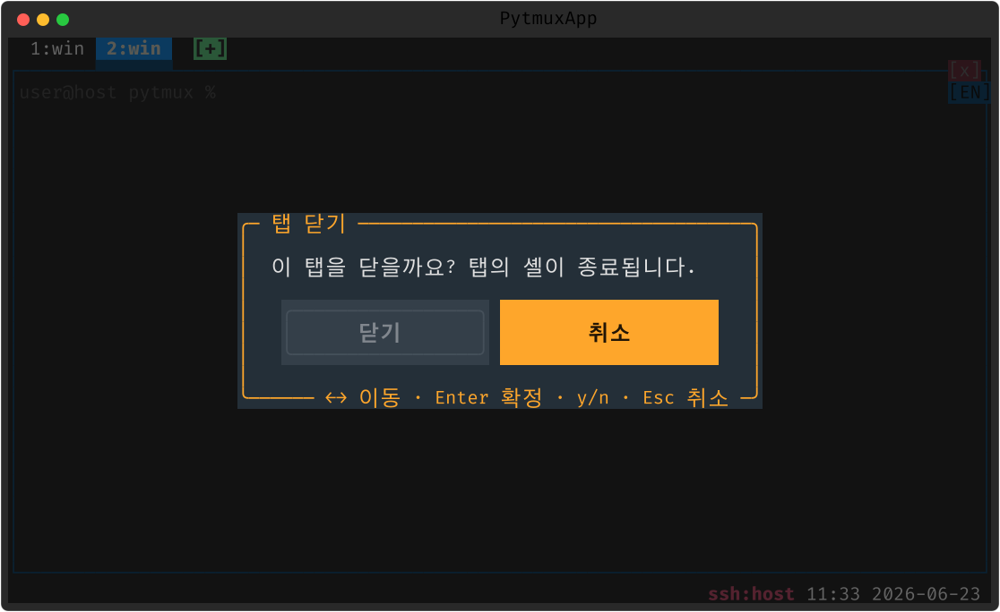
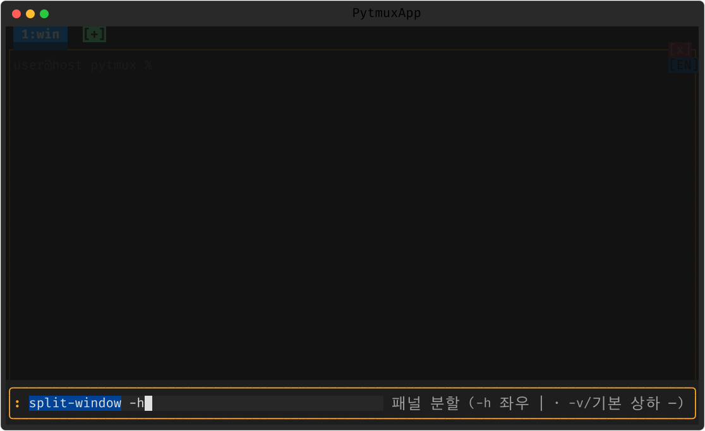

pytmux 사용 가이드
설치부터 패널·탭·마우스·메뉴·명령·Claude 연동·운영까지, 실제 화면 스크린샷과 함께 안내합니다. 빠르게 둘러보려면 랜딩 페이지를 먼저 보세요.
- 작성창 여러 줄 작성창에서 Ctrl+Home·Ctrl+End 로 글 전체의 맨 처음·맨 끝으로 이동할 수 있습니다. 줄 단위 Home·End 와 달리 글 전체의 시작·끝으로 커서를 옮깁니다.
- 이름 동기화 정해 둔 폴더에서 Claude Code 를 실행하면 탭·패널 이름과 Claude 세션 이름이 키워드로 자동으로 맞춰집니다. 컴퓨터·OS·폴더별 규칙을 :namesync 편집기로 정해 두면, 그 폴더에서 Claude 를 띄울 때 pytmux 탭·패널 이름이 바뀌고 Claude 세션도 /rename 으로 같은 이름이 됩니다. 기존 Claude 기능과 분리된 새 플러그인입니다.
시작하기 전에
pytmux 는 Python/Textual 로 만든 tmux 유사 터미널 멀티플렉서입니다. 하나의 터미널 안에서 여러 셸을 패널로 나눠 쓰고, 앱이나 터미널 창을 닫아도 셸 세션이 계속 살아 있게 해 줍니다. 단일 서버(데몬)–다중 클라이언트 구조이며 macOS · Linux · Windows(ConPTY) 를 지원합니다.
1. 설치
파이썬만 있으면 됩니다. Python 3.11 이상을 권장합니다. 의존성을 설치합니다(직접 설치는 pip install textual pyte wcwidth, Windows 는 pip install pywinpty 도 추가).
실행 — 서버가 없으면 자동 기동 후 attach 합니다.
1.1 pytmux 명령으로 등록 (선택)
래퍼를 ~/.local/bin 에 설치합니다. 인자로 다른 디렉터리를,
BIN=pt 로 다른 이름(pt)을 지정할 수 있습니다.
Windows(PowerShell)에서는 install.ps1 / uninstall.ps1 을 사용합니다.
1.2 SSH/mosh 접속 시 자동 attach (선택)
원격 로그인하면 곧바로 pytmux 세션으로 들어가도록 ~/.zshrc 등에 추가합니다.
인터랙티브 SSH/mosh 로그인일 때만 attach 하도록 중첩 방지 가드를 둡니다.
exec pytmux 는 권하지 않습니다. pytmux 가 즉시
종료하면 로그인 셸이 함께 죽고, autossh 등과 만나면 재접속 루프가 됩니다.

2. 핵심 개념: 탭 → 윈도우 → 패널
pytmux 는 단일 세션 모델입니다. 멀티 세션 개념은 없습니다. 항상 하나의 세션으로 시작하고, 탭으로 여러 윈도우를 열며, 각 윈도우를 패널로 나눕니다.
- 탭 — 최상위. 1번부터 번호가 매겨지고 상단 탭바에 나타납니다.
- 윈도우 — 각 탭에 종속된 단일 윈도우.
- 패널 — 윈도우를 분할한 셸 집합. 활성 패널은 파란 테두리.
셸 영속성: 셸 PTY 를 백그라운드 데몬(서버)이 보유합니다.
앱을 닫거나(detach) 상위 터미널 창을 닫아도 셸은 계속 돌아가고, 다시
실행하면 이어서 붙습니다.
3. 패널 다루기
기본 prefix 는 Ctrl-b 입니다(설정으로 변경 가능).
| 동작 | 키 / 명령 |
|---|---|
| 좌우 분할 | prefix % · split-window -h |
| 상하 분할 | prefix " · split-window -v |
| 포커스 이동 | prefix ←↑↓→ · 패널 클릭 |
| 크기 조절 | 경계선 드래그 · resize-pane |
| 줌 토글 | prefix z |
| 교환(swap) | Shift+왼쪽 드래그 · swap-pane |
| 삭제 | prefix x(확인) · 패널 [x] |

┬┴├┤ 로 연결됩니다.
패널이 둘 이상이면 각 패널을 테두리로 감싸고, 활성 패널은 파란색,
비활성은 회색으로 표시합니다. swap-pane / rotate-window 로
위치를 바꾸거나 돌릴 수 있고, 레이아웃을 저장/복원할 수 있습니다.

4. 탭 다루기
탭이 하나여도 상단에 탭 인터페이스(탭 목록 + 마지막 탭 오른쪽의 [+])가
나타납니다. 활성 탭은 아래 콘텐츠 영역과 연결된 노트북 탭 모양으로 이어집니다.
- 생성·전환 —
[+]클릭 ·new-tab· prefix 숫자 - 이름변경 —
rename-tab· 탭 더블클릭 - 재정렬 — 탭 드래그 ·
swap-window - 고정(핀) — prefix P 로 탭을 왼쪽에 고정
- 삭제 — 탭
[x]·kill-window(확인)


5. 스크롤백 (복사 모드)
copy-mode 로 따로 들어가지 않아도, 패널 위에서 휠을 올리면 바로 지난 출력을 봅니다. 패널마다 독립적입니다. 스크롤백 안에서 텍스트를 검색하고 점프할 수 있고, 복사 모드 키 스타일은 vi(기본) 또는 emacs 로 설정합니다.

6. 마우스 · 메뉴 · 명령 프롬프트
거의 모든 동작을 마우스로 할 수 있습니다.
- 경계선 드래그 → 패널 크기 조절
- 패널 클릭 → 포커스, 우클릭 → 메뉴
- 휠 → 스크롤백, Shift+드래그 → 패널 swap
- 시계 클릭 → 시계 모드, 날짜 클릭 → 달력 오버레이
6.1 메뉴 (prefix Enter 또는 우클릭)
패널·레이아웃·탭 그룹(서브메뉴)으로 정리된 메뉴로 거의 모든 동작을 합니다.

6.2 명령 프롬프트 (prefix : 또는 F12)
공백 검색(clock m → clock-mode), ghost 자동완성, 인자 이력
(↑↓·Tab)을 지원합니다.

6.3 디렉토리 트리 (ncd)
루트→cwd 펼침, speed search, Enter 로 cd, ⇧Enter/^O 로 새 패널에서 엽니다.

7. Claude Code 연동
패널에서 claude CLI 를 돌리면 pytmux 가 상태·토큰·한도를 추적합니다.
실행 중인 탭에 상태 아이콘을 표시합니다 — 대기 ○ · 처리중 ◐ · 리밋 멈춤 ⊘.
비활성 탭의 작업이 끝나면 탭 배경색으로 알립니다.

claude 가 실행 중인 패널.7.1 프롬프트 히스토리
보낸 프롬프트 이력을 미리보기·검색·점프합니다(claude-prompt-history 플러그인).

7.2 토큰 리밋 자동 재개
사용량 리밋에 걸려 멈추면 출력의 해제 시각을 읽어 그때 자동으로 재개합니다.
prefix R 로 토글하며 상태줄에 AR 로 표시됩니다.

7.3 권한모드 · 시작 규칙
권한모드 footer 를 클릭하면 auto / default / plan 선택 팝업이 열립니다.
claude-rules 로 시작 규칙을 자동 주입할 수 있습니다.

7.4 화면 안정성 (CJK 모호폭 · 깨짐 완화)
Claude Code 처럼 부분 갱신이 많은 TUI 는 단말마다 다른 모호폭(ambiguous-width)
처리 때문에 한글·기호가 겹쳐 보일 수 있습니다. pytmux 는 시작 시 폭을 자동 감지하고,
런타임에 :set ambiguous-width narrow|wide|auto 로 폭 모델을 일관되게 전환합니다.
드물게 출력이 어긋나면 claude-auto-redraw on(기본 off) 으로 완료(busy→idle)마다
패널을 한 번 전체 재출력해 자동 복원하도록 켤 수 있습니다.
8. 토큰 사용량
상태줄의 토큰 배지를 클릭하면 기간 / 세션 / 한도 / 경고 / /usage / 시나리오
노트북 탭으로 보는 사용량 팝업이 열립니다. 화면 스크랩이 아니라
~/.claude/*.jsonl 트랜스크립트 회계를 권위 출처로 삼아 cache_read 까지
정확히 집계합니다(스크랩 누계는 실제의 약 0.4% 에 불과합니다). 탭 사이는
p(세션) · l(한도) · u(/usage) 키로도 오갑니다.
상단 요약줄(5h% · 주% · ~Σ)은 모든 탭에 공통으로 붙습니다.
8.1 기간 뷰 — 시간 흐름으로
토큰을 월 → 주 → 일 → 시각 계층 트리로 봅니다. 각 행에 토큰 합과 가로 막대가 붙고, Enter / ←→ 로 주를 일·시각까지 펼치고 접습니다. 언제 토큰이 몰렸는지 시간 축으로 짚을 때 씁니다.

8.2 세션 뷰 — Claude 세션별로
p 로 전환합니다. 행이 Claude 세션별 합(대표 탭:패널
라벨 · 타임스탬프 · 토큰)입니다. 닫히고 재사용되는 패널 id 대신 안정적인 세션 id 로
묶어, 어느 세션이 토큰을 많이 썼는지 비교할 때 씁니다.

8.3 한도 뷰 — /usage 실측과 리셋
l 로 전환합니다. /usage 실측 한도(세션 5h · 주 전체 ·
주 Sonnet)를 % 사용 막대와 리셋 시각으로 보여주고, 현재 5h 창 추정 Σ 와
다음 리셋까지를 블록 숫자 카운트다운 시계로 보여줍니다(매 초 갱신).
첫 두 행에서 ←→ 로 모델·컨텍스트를 바꿔 적용할 수도 있어,
한도를 보며 모델을 고를 때 씁니다.

9. 운영 · 작업 보존 서버 재시작
실행 중인 셸을 죽이지 않고 코드만 새 이미지로 교체합니다(제자리 re-exec).
| 명령 | 설명 |
|---|---|
restart-server | 서버만 재시작 |
restart-all | 서버 + 클라 동시 재시작 |
restart-check | 드라이런(실제 재시작 전 점검) |
열린 패널의 셸 · 실행 중 프로그램 · 스크롤백을 살린 채 코드만 교체합니다. Windows 는 아웃오브프로세스 pty-host 가 ConPTY 를 영구 소유해 재시작이 HPCON 을 건드리지 않습니다.

9.1 네트워크 응답성과 재접속
클라↔서버 IPC 지연이 커지면 패널 외곽선을 빨간색으로 표시하고,
고착되면 reconnect(또는 워치독 자동)으로 실행 중 셸/Claude 를
죽이지 않고 IPC 만 다시 세워 반응성을 회복합니다.

10. 원격 페더레이션 (ssh)
remote-attach 로 ssh 너머 다른 머신의 pytmux 서버에 붙습니다. 원격 탭은
탭바·외곽선을 분홍색으로 구분하며, 로컬 탭과 섞이지 않습니다. 원격
서버가 없으면 분리 서버를 자동 기동합니다(PYTMUX_NO_REMOTE_AUTOSTART=1 로 opt-out).

11. 설정 파일
pytmux.conf 로 동작을 바꿉니다(pytmux.conf.example 참고). 통합 설정 팝업 :settings 로도 카테고리별로 조정합니다.
| 설정 | 설명 |
|---|---|
set prefix C-a | prefix 키 변경 (기본: Ctrl-b) |
set mouse on | 마우스 on/off |
set strip-box-drawing on | 붙여넣기 시 패널 테두리(박스드로잉) 제거 (기본 ON) |
set tab-bar always | 상단 탭바: always(기본) / auto(2개 이상일 때만) |
set mode-keys vi | 복사 모드 키 스타일: vi(기본) / emacs |
set default-path current | 새 탭/패널 시작 디렉토리: current / home / <경로> |
set ambiguous-width auto | CJK 모호폭 처리: narrow(기본) / wide / auto(단말 자동 감지) |
pytmux.conf 예시 — 아래 줄을 그대로 복사해 붙여넣으면 됩니다.

:settings).12. 플러그인 (delete-to-disable)
시계·달력·디렉토리 트리(ncd)·IME 한/영 배지·Claude Code 통합·프롬프트 히스토리·세션
리줌·사용 한도 화면·퍼포스 CL 목록·출력 캡처(REC)·피드백 문구 숨김이 모두
pytmuxlib/plugins/<name>/ 디렉토리 하나로 응집된 플러그인입니다.
디렉토리를 지우면 그 기능이 명령·자동완성·렌더 어디에도 안 나타나고
조용히 사라집니다(코어는 레지스트리 훅 + getattr 가드로만 닿음).